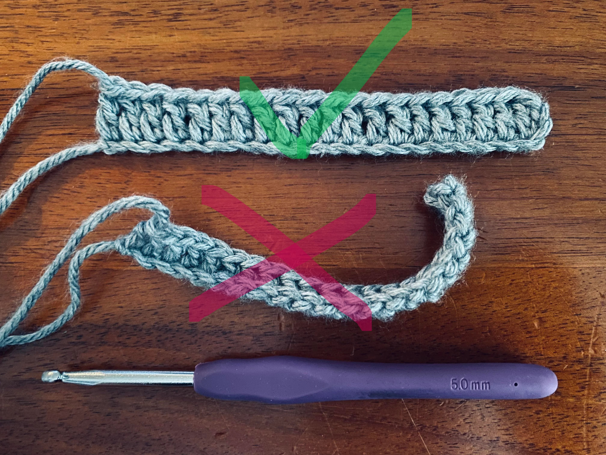
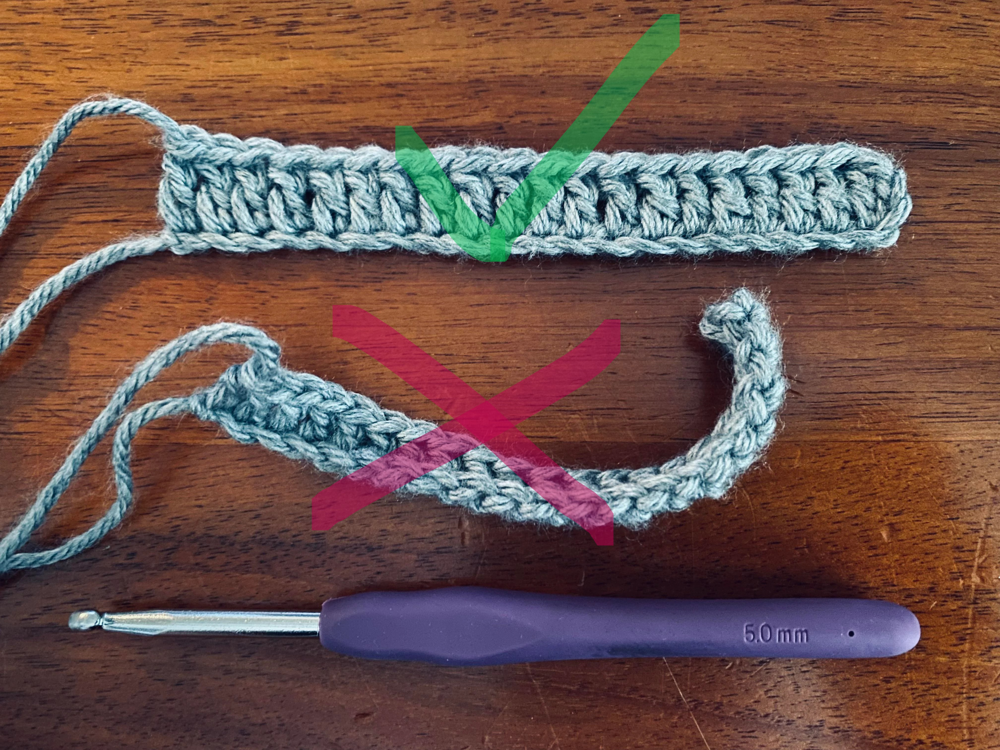

Como Segurar a Agulha e a Linha
Antes de começar a criar suas peças, é essencial aprender a segurar corretamente a agulha e a linha para garantir um trabalho mais eficiente e confortável.

Segurando a Agulha
Existem várias maneiras de segurar a agulha, e o método pode variar dependendo da sua preferência pessoal. No entanto, o mais comum é segurar a agulha como um lápis ou como uma faca.
- Segurando como um lápis: Coloque a agulha entre o polegar e o indicador, como se estivesse segurando um lápis.
- Segurando como uma faca: Coloque a agulha entre o polegar e o dedo médio, com o indicador apoiando a parte superior.

A escolha de como segurar a agulha depende do seu conforto. Experimente ambos os métodos e veja qual funciona melhor para você.
Segurando a Linha
Segurar a linha corretamente também é importante para garantir que o crochê fique uniforme. Aqui estão algumas dicas:
- Deixe a linha passar entre os dedos: Passe a linha entre os dedos indicador, médio e anelar para controlar o tensionamento.
- Evite que a linha fique muito solta ou apertada: O tensionamento da linha deve ser consistente, para que os pontos fiquem uniformes.
 

O mais importante é que você se sinta confortável e consiga controlar a linha de maneira eficiente.
Prática
A prática constante ajudará a melhorar sua habilidade ao segurar a agulha e a linha. Comece com projetos simples, como pequenos quadrados ou círculos, para se acostumar com o movimento e o controle da linha.